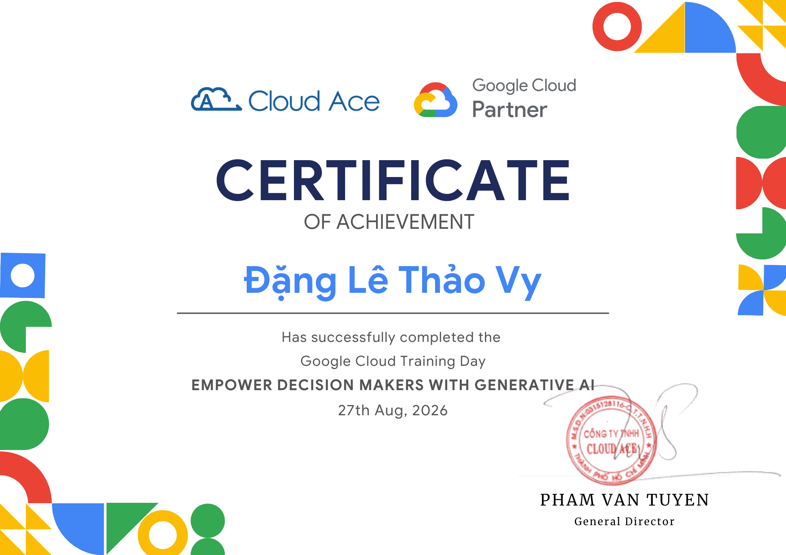
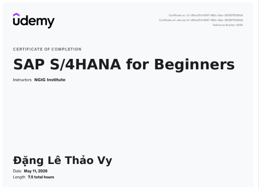
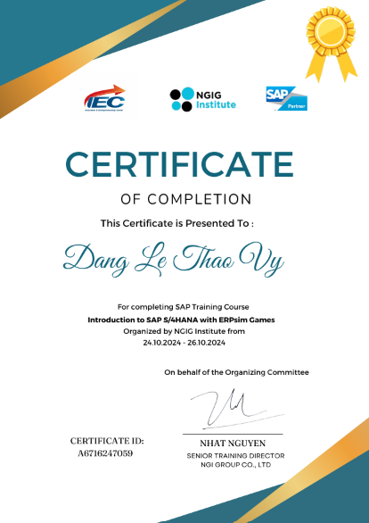

Tôi là sinh viên ngành Hệ thống Thông tin Quản lý tại Trường Đại học Kinh tế - Luật, ĐHQG TP.HCM, có định hướng phát triển chuyên môn trong lĩnh vực SAP, ERP và hệ thống thông tin doanh nghiệp.
Trong quá trình học tập, tôi đã được tiếp cận với các kiến thức về hệ thống thông tin, cơ sở dữ liệu, ERP và SAP S/4HANA. Thông qua các buổi học và thực hành, tôi có cơ hội tìm hiểu cách hệ thống thông tin hỗ trợ doanh nghiệp trong việc quản lý dữ liệu, chuẩn hóa quy trình và kết nối các hoạt động giữa các phòng ban.
Tôi đặc biệt quan tâm đến SAP vì đây là lĩnh vực kết hợp giữa công nghệ thông tin và kiến thức nghiệp vụ doanh nghiệp. Tôi mong muốn tìm hiểu sâu hơn về các quy trình như mua hàng, bán hàng, quản lý vật tư, tài chính và cách các quy trình này được tích hợp trên hệ thống ERP.
Bên cạnh kiến thức chuyên môn, tôi có tinh thần học hỏi, trách nhiệm và chủ động trong công việc. Tôi luôn sẵn sàng tiếp thu những kiến thức mới, tích cực trao đổi với các thành viên trong nhóm và cố gắng hoàn thành công việc đúng thời hạn.
Trong thời gian tới, tôi mong muốn được tham gia vào môi trường thực tế để có thêm kinh nghiệm, nâng cao khả năng phân tích nghiệp vụ, giải quyết vấn đề và làm việc với hệ thống doanh nghiệp. Mục tiêu của tôi là từng bước phát triển năng lực chuyên môn và theo đuổi con đường SAP/ERP trong tương lai.
Đại học Kinh tế - Luật, ĐHQG TP.HCM
Ngành: Hệ thống thông tin quản lý
Khóa: K24
Định hướng: Hệ thống thông tin doanh nghiệp,
ERP và SAP

EMPOWER DECISION MAKERS WITH GENERATIVE AI - Google Cloud Ace
SAP S/4HANA FOR BEGINNER - NGIG Institute
Introduction to SAP S/4HANA with ERPsim Game - NGIG Institute